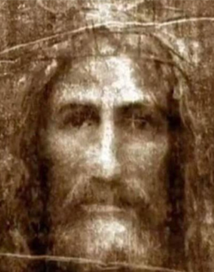

Devoção à Sagrada Face
O título "A Sagrada Face" associado a Santa Terezinha do Menino Jesus tem raízes em sua devoção e experiência espiritual. Terezinha tinha uma profunda devoção ao rosto de Jesus Cristo, especialmente em sua contemplação da Paixão. A "Face" de Cristo simbolizava para ela a humanidade de Jesus, a expressão máxima do amor divino e da redenção.
Santa Terezinha encontrava consolo e inspiração na contemplação da Sagrada Face de Jesus, principalmente durante seus momentos de oração e reflexão. A devoção à Sagrada Face é uma tradição antiga na Igreja Católica, e muitos santos ao longo da história demonstraram uma ligação especial com essa devoção.
A associação de Santa Terezinha com a "Sagrada Face" também pode estar relacionada à sua busca pela simplicidade e humildade, características que ela via refletidas no rosto de Jesus durante sua vida terrena. A contemplação da Sagrada Face representava, para Terezinha, uma maneira de se aproximar de Deus e de buscar a imitação de Cristo em sua vida cotidiana.
Oração à Sagrada Face composta por Santa Terezinha
Jesus, que na Vossa crudelíssima Paixão Vos tornastes “o opróbrio dos homens e o homem das dores”, eu adoro a Vossa Divina Face sobre a qual resplandecem a beleza e ternura da Divindade e que agora se tornou para mim como a face de um “leproso” (Is. 53,4).
Mas sob estes traços desfigurados reconheço o Vosso infinito amor e ardentemente desejo amar-Vos e fazer-Vos amar por todos os homens.
As lágrimas que com tanta abundância correram dos Vossos olhos, se me afiguram quais pérolas preciosas, que eu quisera recolher para, com seu valor infinito, resgatar as almas dos pobres pecadores.
Jesus, Vossa Face é a única beleza que encanta o meu coração, de boa mente quero renunciar na terra à doçura do Vosso olhar e ao inefável ósculo de Vossa boca divina, mas suplico-Vos, imprimi em meu coração Vossa Divina Imagem, e inflamai-me com Vosso amor, a fim de que possa um dia contemplar a Vossa Face gloriosa no Céu. Amém.
